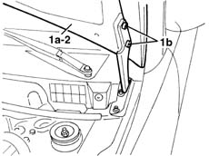

7210E20 R.R. BONNET LID
- Path
- Procedures > 72 PANELS AND FRAME > 7210 REMOVING REFITTING > 7210E external parts > 7210E20 R.R. BONNET LID
- Kind
- repair procedure (removal / refitting; the operation number is the code)
- Applies to
- all engines; all production periods
- Interactive page
- https://sloeber94.github.io/elrnDB-lYpsln/en/#/2429734
Applies to: all engines; all production periods
 Removing
Removing
 Refitting
RefittingOpen the bonnet lid.
1. Support bonnet lid (1a) and unscrew hinge screws (1b).
2. Remove the bonnet.

Applies to: all engines; all production periods
Refitting
RemovingCheck that the bonnet and hinges are undamaged.
Fit the bonnet lid.
Screw in the hinge bolts without tightening them.